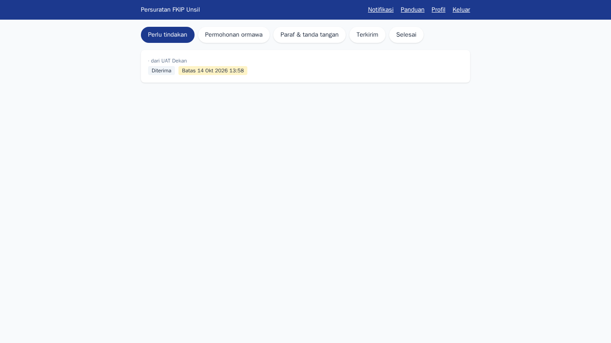
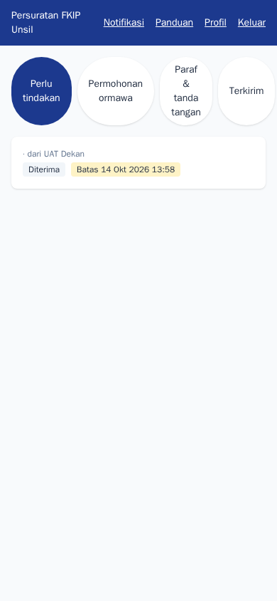
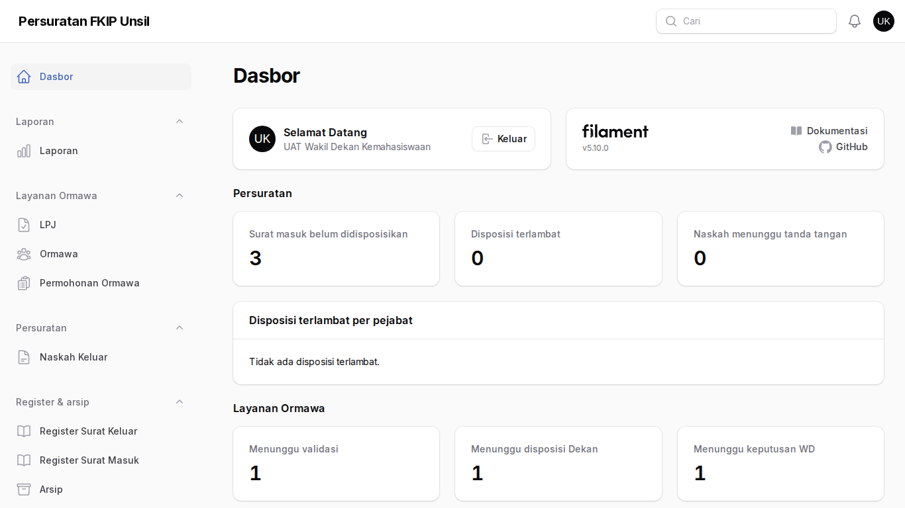
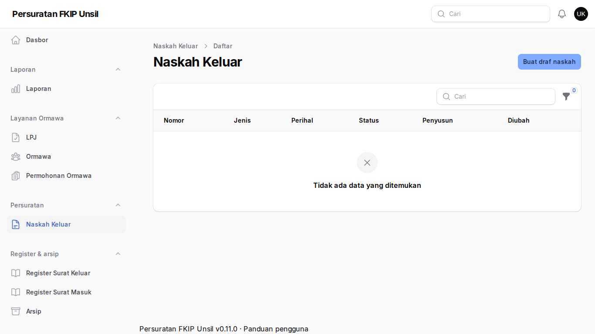
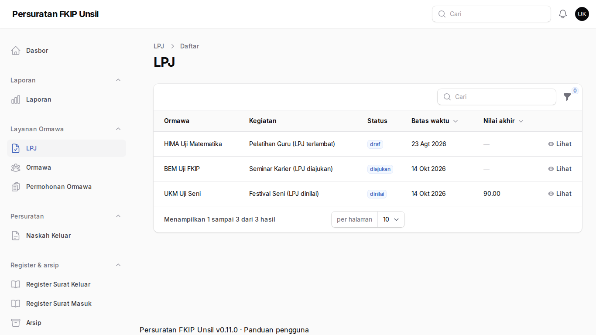

Wakil Dekan
Tujuan
Menindaklanjuti disposisi, memutuskan permohonan ormawa yang didisposisikan kepada Anda, memaraf/menandatangani naskah, dan menilai LPJ.
Cara masuk
Akun dan jabatan (bidang) ditetapkan admin. Wajib menyiapkan MFA pada masuk pertama ke /admin.
Langkah-langkah
- Kotak masuk
Disposisi surat masuk dan permohonan ormawa yang menunggu keputusan Anda.
Langkah 1 — Kotak masuk - Dari ponsel
Keputusan dapat diambil dari ponsel.
Langkah 2 — Dari ponsel - Dasbor
Ringkasan beban kerja dan keterlambatan.
Langkah 3 — Dasbor - Paraf dan tanda tangan
Naskah menunggu giliran paraf Anda atau tanda tangan atas nama/untuk beliau.
Langkah 4 — Paraf dan tanda tangan - Penilaian LPJ
Nilai aspek ketepatan dan kepatuhan; nilai dapat direvisi sebelum final.
Langkah 5 — Penilaian LPJ
Tanya jawab
Bagaimana keputusan WD diproses?
Semua WD yang ditunjuk harus Setuju agar permohonan lanjut ke kasubag; satu Tolak membuat permohonan ditolak (alasan wajib).
Saya Plt WD.
Plt dapat memutus selama masa jabatan Plt tercatat di Master › Jabatan.